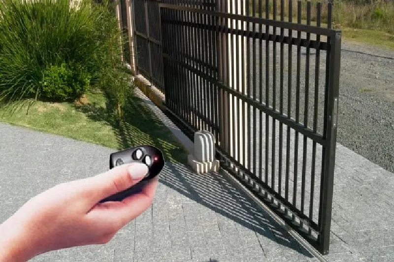
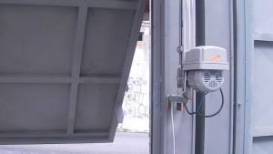
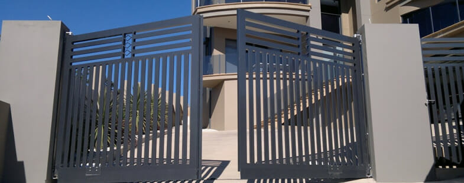

Portões Eletrônicos: Segurança e Praticidade
Os portões eletrônicos têm se tornado cada vez mais populares em residências e empresas, e não é difícil entender o motivo. Eles oferecem uma combinação única de segurança, praticidade e modernidade, tornando o dia a dia muito mais confortável para quem os utiliza. Além da conveniência, os portões eletrônicos aumentam significativamente a segurança do local. Com controles remotos, sensores e sistemas de travamento automáticos, eles dificultam a entrada de pessoas não autorizadas.

Portão Eletrônico
Motor para portão deslizante
Motor para portão deslizante: também conhecido como motor de correr, é o modelo mais popular e acessível. Ideal para portões que se movem na horizontal.
Motor para portão basculante: nesse tipo, o portão abre para cima. É uma opção leve e muito prática, especialmente indicada para locais com pouco espaço lateral.

Motor para portão basculante

Motor para portão pivotante
Motor para portão pivotante: utilizado em portões duplos que se abrem ao meio, para frente ou para trás. É mais comum em condomínios e estabelecimentos comerciais.
Cada tipo de motor possui características próprias em relação à potência, velocidade e peso suportado. Por isso, escolher o modelo certo garante mais eficiência, durabilidade e segurança.